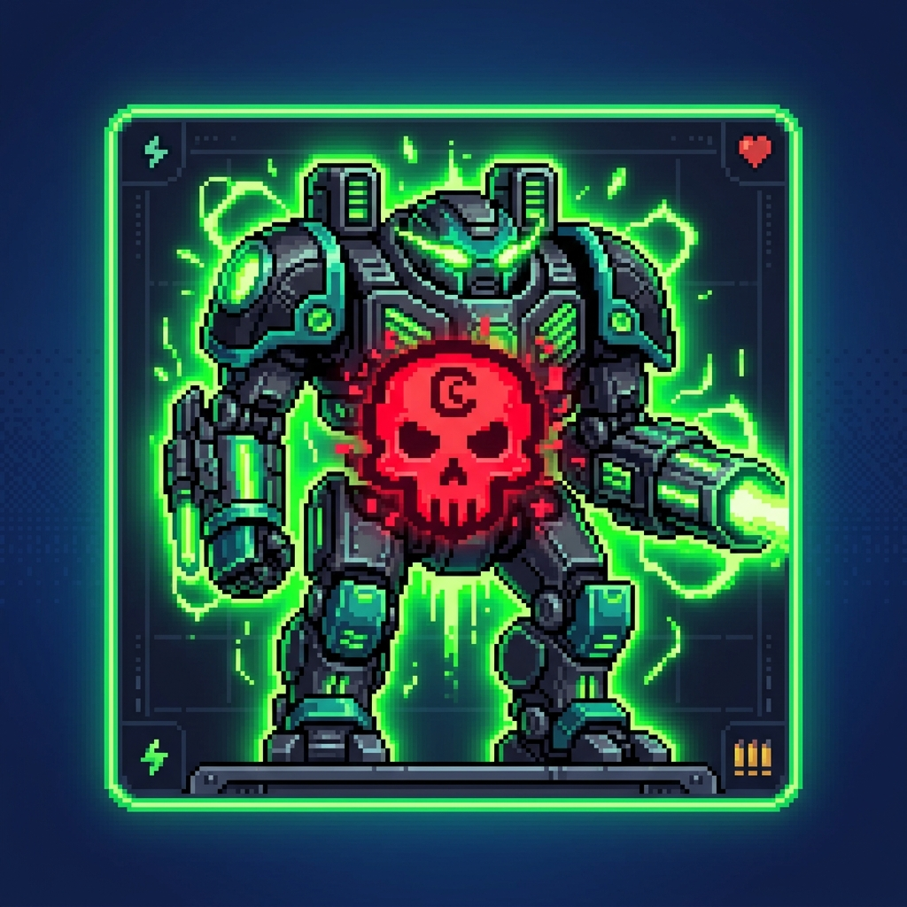

01 — ПРИЗЫВ
✦✳✦✳T5 × 08
ЮНИТЫ Т5
Выбирай Corvus, Toxopid, Eclipse и других. Укажи количество и точку появления.

ЧИЧТЫ. Открыть GitHub ↗Немного безумия на поле боя. Призывай юнитов Т5, устраивай эффекты и просто развлекайся — это же ЧИЧТЫ.
Всё нужное для весёлой игры — в одной панели. Настраивай, запускай и смотри, что будет.
Выбирай Corvus, Toxopid, Eclipse и других. Укажи количество и точку появления.
Настрой количество за цикл и интервал. Одно нажатие — и процесс пошёл.
Взрывы, тряска экрана и громкость звука — настрой каждый эффект отдельно.
Шуточные события, внезапные сообщения и бан Чича. Без спойлеров, конечно.
Установи мод через GitHub или найди его прямо в браузере модификаций Mindustry.
Перейти в репозиторий ↗В главном меню Mindustry перейди в раздел «Моды».
Открой браузер модификаций или импорт с GitHub и введи chichti.
Обнови список модов или перезапусти игру. Готово!
На чужих серверах правила задаёт сервер. В одиночной игре, песочнице и на своих серверах мод работает свободно. На чужих онлайн-серверах возможности могут быть ограничены.
Наш Telegram ↗